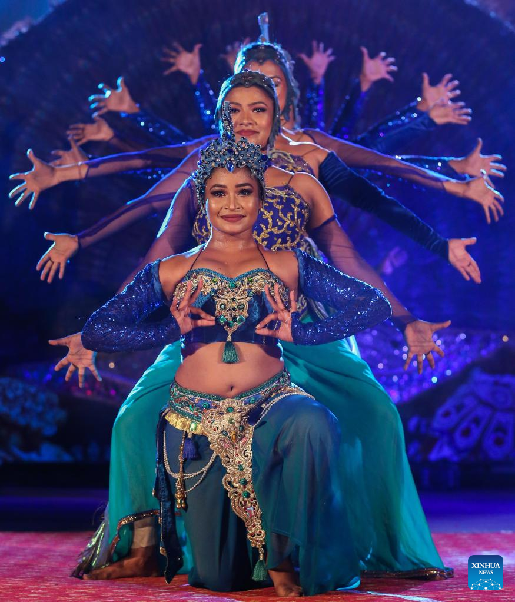

Courses
- Kandyan dances
- Traditional dance form originating from the Kandyan region of Sri Lanka. It includes various movements, gestures,
and rhythms, often performed during cultural events, festivals, and ceremonies. Kandyan dances are characterized
by elaborate costumes, rhythmic footwork, and intricate hand movements.
- Sabaragamuwa dances
- Another traditional dance style, specific to the Sabaragamuwa province of Sri Lanka. Similar to Kandyan dances,
Sabaragamuwa dances showcase cultural elements unique to the region, with distinct costumes, music, and choreography.
- low-country dances
- Also known as "Pahatha Rata Natum", these dances are traditional to the low-country or coastal areas of Sri Lanka.
They exhibit influences from various cultures that have interacted with the coastal regions over centuries, including
elements from indigenous Sri Lankan culture, as well as Portuguese, Dutch, and British influences.
- hip pop dances
- A modern, urban dance style that originated in the United States but has gained popularity worldwide, including
in Sri Lanka. Hip hop dance encompasses a wide range of styles, including breaking, locking, popping, and various
freestyle movements. It is often characterized by its energetic and expressive nature, with dancers frequently
improvising movements to the beat of hip hop music.
Upcomming Events
Kandiyan Dancing competition
held on 25th of March 2024
Hip pop Dancing competition
held on 1st of April 2024
Vesak perahera
held on 10th of May 2024